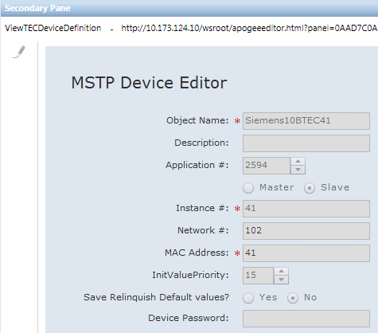

FLN Device Editor


NOTE:
When this editor is opened in Operating mode, all fields are display only and cannot be edited. In order to make changes with this editor, System Manager must be in Engineering mode.
This editor displays the properties of the field level network device selected in the System Browser.
Item | Description |
Object Name | Displays the FLN Device name. |
Description | Displays the FLN Device description. |
Application Number | Displays the application number. |
Master/Slave | Displays the type of device being created.
|
Instance # | Displays the device identification number. |
Network # | Displays the network number. |
MAC Address | Displays the MAC address. |
InitValuePriority | Displays the priority used for writing initial values. |
Save Relinquish Default Value | Displays whether or not the relinquish default values of the device will be stored in the controller. |
Device Password | Allows you to enter a password for the device. |